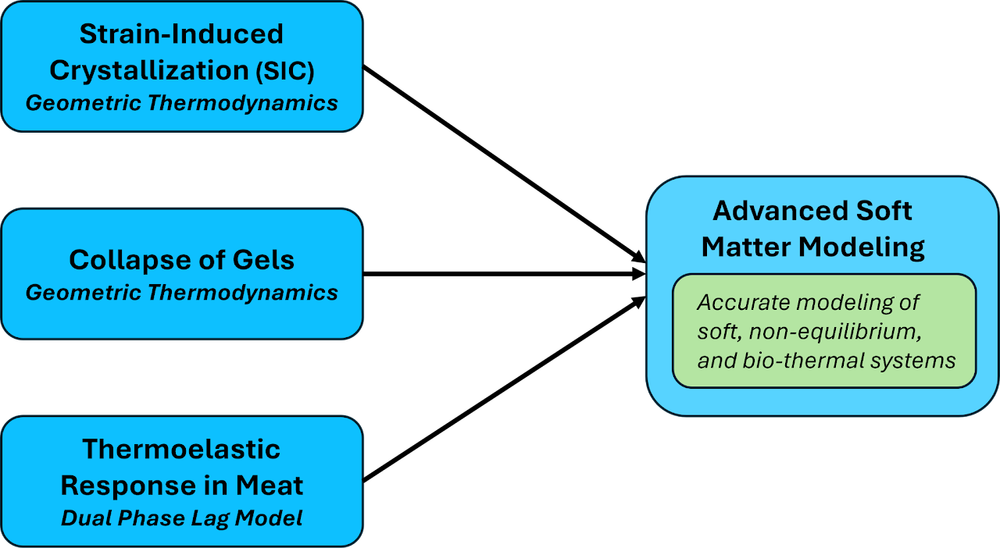
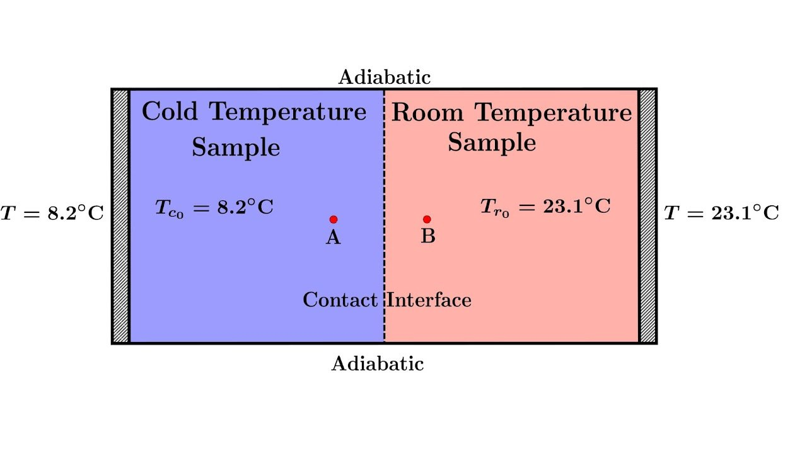
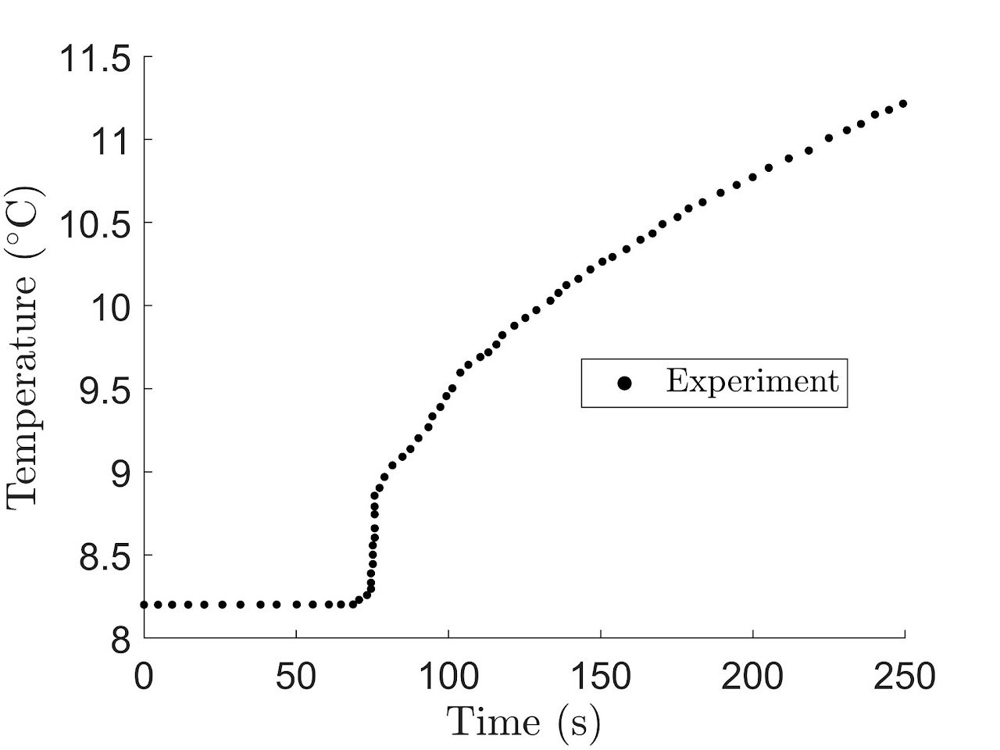
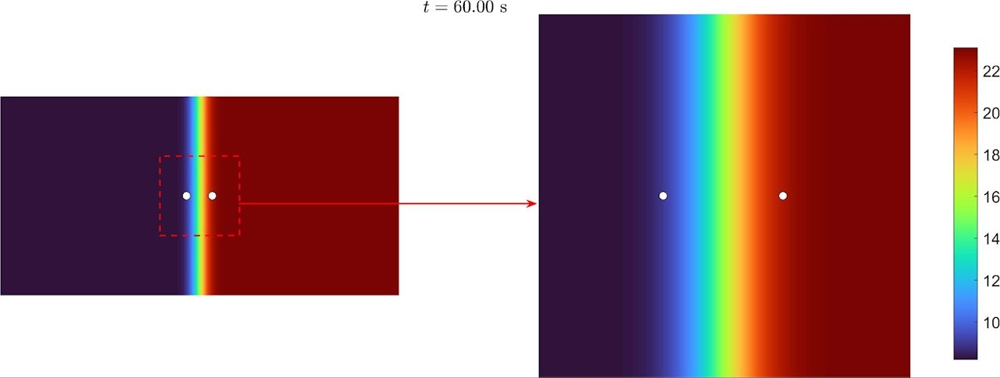
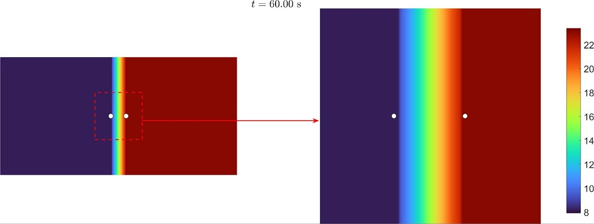
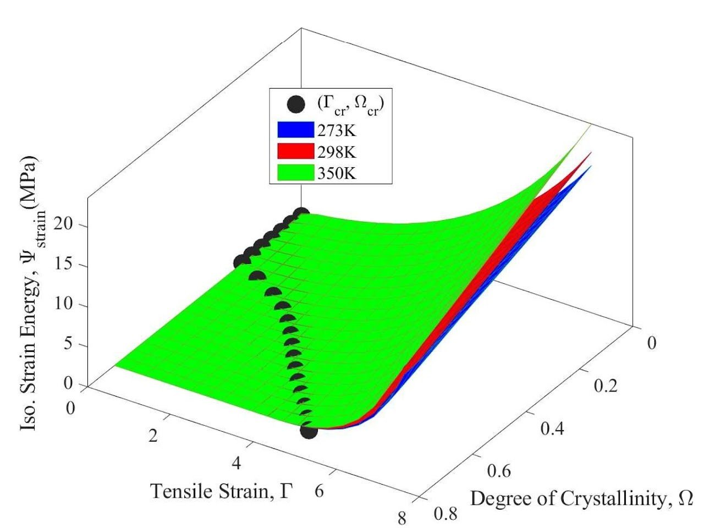
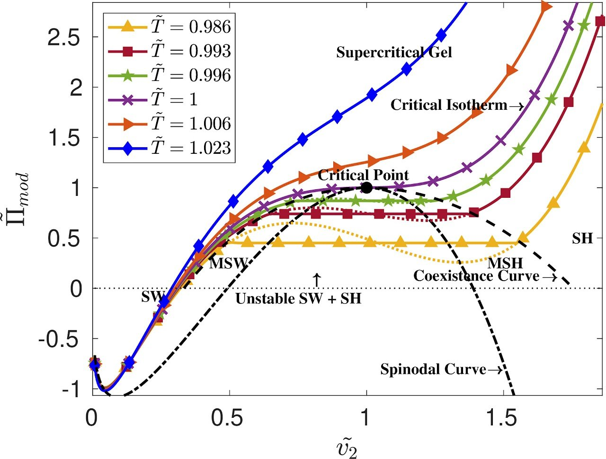
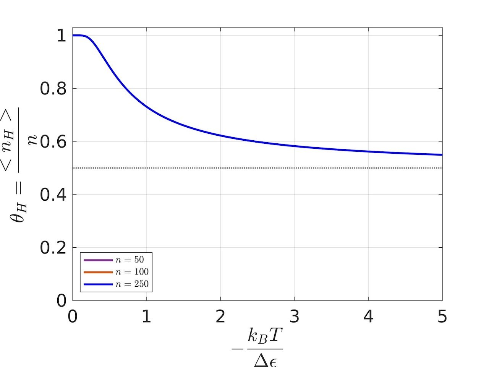
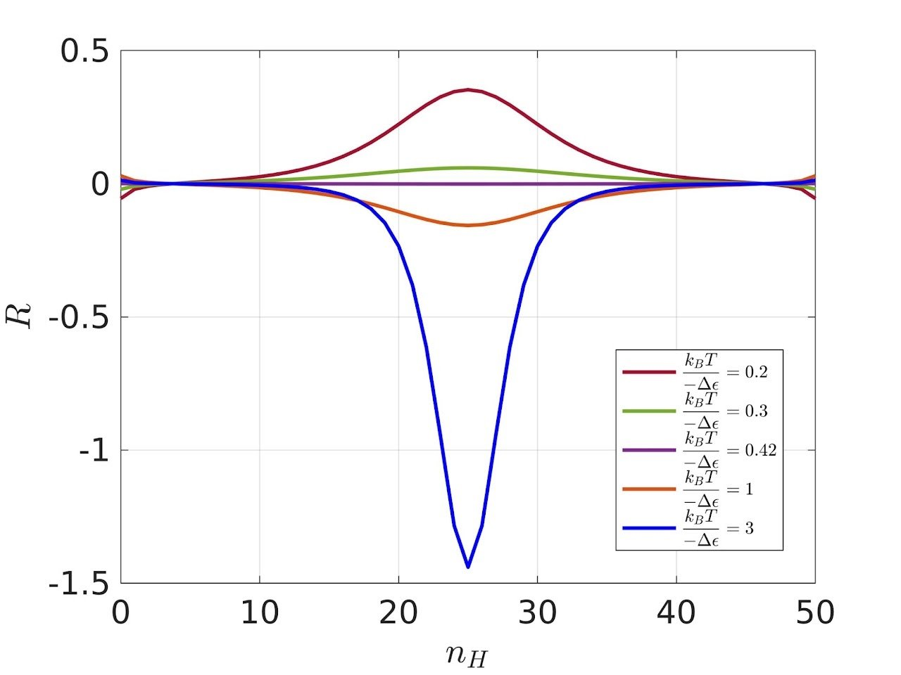

Thermomechanical and geometric-thermodynamic modeling of soft and non-equilibrium systems.

Projects
Non-Fourier Heat Conduction: Dual Phase Lag Model
Ph.D. project · August 2024 – April 2025
A finite element study of a two-dimensional solid under small strain that compares classical
Fourier heat conduction with the non-Fourier Dual Phase Lag (DPL) theory. The formulation uses
Q4 elements with an implicit Newmark-β time integration scheme. The two models differ markedly in
their transient response, which matters for microscale and fast-transient thermal applications.
The framework was extended to finite-strain dynamic thermoelasticity, using Newton–Raphson iterations
to model large deformations and thermal-wave propagation (MATLAB and Python).
Related: A. Raza and D. Roy, "A finite element study of small-strain thermoelasticity under
Dual Phase Lag and Fourier heat conduction models" (under review).

Problem setup: cold and room-temperature samples in contact

Thermal evolution at point A: experiment by Mitra et al. (1995)

Temperature field: Fourier model

Temperature field: DPL model
Geometric Thermodynamics of Strain-Induced Crystallization in Polymers
Ph.D. project · August 2021 – July 2022
Applies Ruppeiner's geometric thermodynamics to strain-induced crystallization in stretched rubber.
The thermodynamic curvature reveals a spurious isochoric energy arising from stretching segments
that have already crystallized, and a correction term for the free energy is proposed.
Iso-strain energy surface against tensile stretch and degree of crystallinity

Iso-strain energy surface at different temperatures
Geometric Thermodynamics of Collapse of Gels
Ph.D. project · August 2022 – August 2024
Studies the volumetric phase transition in polyacrylamide gels using a Landau–Ginzburg free energy
built on Flory–Huggins theory, together with Ruppeiner geometry. The resulting scalar curvature is
linked to microstructural interactions and shows that the gel transition shares its universality
class with van der Waals fluids.
Isotherms showing the critical isotherm and critical point

Reduced isotherms with spinodal and coexistence curves
Geometric Thermodynamics of Helix–Coil Transition in DNA
Uses the Zimm–Bragg model and Ruppeiner geometry, with temperature and the number of helical
segments as thermodynamic coordinates, to examine how the curvature varies with temperature and
fractional helicity across the helix–coil transition.
Fractional helicity of polybenzylglutamate oligomers

Fractional helicity against scaled temperature

Thermodynamic curvature R against helical segments
Other Projects
Topology optimization of 2D truss structures with stress and buckling constraints, improving
load-carrying efficiency and structural stability.
Thermomechanical analysis of a sandwich wall panel in Abaqus, studying coupled heat transfer and
structural response.
Machine learning: a classification pipeline to identify persons of interest in the Enron dataset
using scikit-learn (Udacity Machine Learning Engineer Nanodegree, March 2025).
River water quality forecasting (B.Tech project, 2018–19): a hybrid best-subset and AR(2) model
predicting conductivity at 15 monitoring stations on the Godavari, evaluated with RMSE and R².